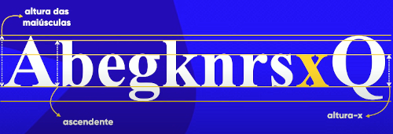
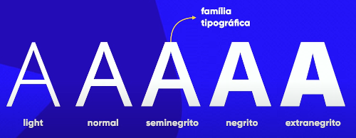

Sempre que é criada uma fonte nova, em primeiro lugar se desenha o x minúsculo, pois existe uma métrica chamada altura x que é a altura do x minúsculo, que determinará qual é a altura base de todas as letras minúsculas
Assim como existe a altura das letras minúsculas, proporcionalmente cria-se as letras maiúsculas que chamamos de Altura das Maiúsculas
O termo Ascendente é designado para nomear o espaço que algumas letras acabam passando da linha da altura x, nesse caso, para cima.
Já o termo Descendente é designado para nomear esse mesmo espaço, no entanto, para baixo.
A Altura do Corpo é a altura geral da fonte, de todas as letras, sendo o somatório de todas as letras e alturas, devemos nos concentrar em saber desta na hora de achar uma fonte para utilizarmos.
Nem todas as fontes possuem as Serifas elas são os traços das letras nas pontas. Ela cria uma linha imaginária que nosso cérebro percebe, facilitando a leitura em papel, mas estudos mostram que fontes sem serifas podem ajudar a facilitar a leitura em telas.
Cada letra representa em si um Glifo pois nomeamos assim as letras.
Conjunto de todos os glifos(caracteres, letras) de uma determinada família, isso é uma Fonte. Fonte também pode ser o arquivo que baixamos para usar certa fonte no computador
Nomenclatura para a variação de tipos da mesma fonte.
Temos algumas categorias de fontes para usarmos e nos localizarmos. Por exemplo: